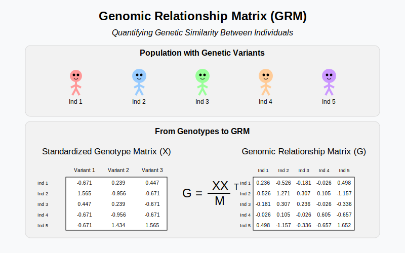

Genetic Relationship Matrix¶
Genetic relationship matrix (GRM) captures how related individuals are to each other at the genomic level by measuring the proportion of shared genetic variants across their genomes, and quantifies the genetic similarity between every pair of individuals in the population.
Graphical Summary¶

Key Formula¶
The Genomic Relationship Matrix (GRM) is a standardized version of the kinship matrix that accounts for allele frequencies. One common formulation is:
Where:
\(\mathbf{X}\) is the scaled genotype matrix of \(N\) individuals and \(M\) genetic variants.
\( \mathbf{G} \) is an \( N \times N \) matrix capturing the pairwise genetic relationships.
Technical Details¶
Note that because \(\mathbf{X}\) is scaled so that the variance of each SNP is 1, instead of across individuals, so the diagonal elements of \(\mathbf{G}\) is generally not 1.
Example¶
In this example, we compute the GRM from genotype data by matrix multiplication and the resulting matrix quantifies the genetic similarity between individuals in the sample.
# Clear the environment
rm(list = ls())
# Define genotypes for 5 individuals at 3 variants
# These represent actual alleles at each position
# For example, Individual 1 has genotypes: CC, CT, AT
genotypes <- c(
"CC", "CT", "AT", # Individual 1
"TT", "TT", "AA", # Individual 2
"CT", "CT", "AA", # Individual 3
"CC", "TT", "AA", # Individual 4
"CC", "CC", "TT" # Individual 5
)
# Reshape into a matrix
geno_matrix <- matrix(genotypes, nrow=5, ncol=3, byrow=TRUE)
rownames(geno_matrix) <- paste("Individual", 1:5)
colnames(geno_matrix) <- paste("Variant", 1:3)
alt_alleles <- c("T", "C", "T")
# Convert to raw genotype matrix using the additive / dominant / recessive model
Xraw_additive <- matrix(0, nrow=nrow(geno_matrix), ncol=ncol(geno_matrix)) # dount number of non-reference alleles
rownames(Xraw_additive) <- rownames(geno_matrix)
colnames(Xraw_additive) <- colnames(geno_matrix)
for (i in 1:nrow(geno_matrix)) {
for (j in 1:ncol(geno_matrix)) {
alleles <- strsplit(geno_matrix[i,j], "")[[1]]
Xraw_additive[i,j] <- sum(alleles == alt_alleles[j])
}
}
X <- scale(Xraw_additive, center=TRUE, scale=TRUE)
The scaled genotype matrix X (scaled with respective for column) is:
X
| Variant 1 | Variant 2 | Variant 3 | |
|---|---|---|---|
| Individual 1 | -0.6708204 | 0.2390457 | 0.4472136 |
| Individual 2 | 1.5652476 | -0.9561829 | -0.6708204 |
| Individual 3 | 0.4472136 | 0.2390457 | -0.6708204 |
| Individual 4 | -0.6708204 | -0.9561829 | -0.6708204 |
| Individual 5 | -0.6708204 | 1.4342743 | 1.5652476 |
The GRM can be calculated as:
M <- ncol(X)
# calculate the GRM
GRM = (X %*% t(X)) / M
GRM
| Individual 1 | Individual 2 | Individual 3 | Individual 4 | Individual 5 | |
|---|---|---|---|---|---|
| Individual 1 | 0.23571429 | -0.5261905 | -0.18095238 | -0.02619048 | 0.4976190 |
| Individual 2 | -0.52619048 | 1.2714286 | 0.30714286 | 0.10476190 | -1.1571429 |
| Individual 3 | -0.18095238 | 0.3071429 | 0.23571429 | -0.02619048 | -0.3357143 |
| Individual 4 | -0.02619048 | 0.1047619 | -0.02619048 | 0.60476190 | -0.6571429 |
| Individual 5 | 0.49761905 | -1.1571429 | -0.33571429 | -0.65714286 | 1.6523810 |
Off-diagonal elements represent the relatedness between two individuals (in histogram the large peak centered at 0). Diagonal elements represent the relatedness of an individual with itself, which is the average homozygosity or the level of inbreeding (in histogram the small peak centered at 1).
While the LD of a SNP with itself is 1 by definition, the genetic relatedness of an individual with itself can vary around one, because the genotype scaling is performed per SNP, not per individual.